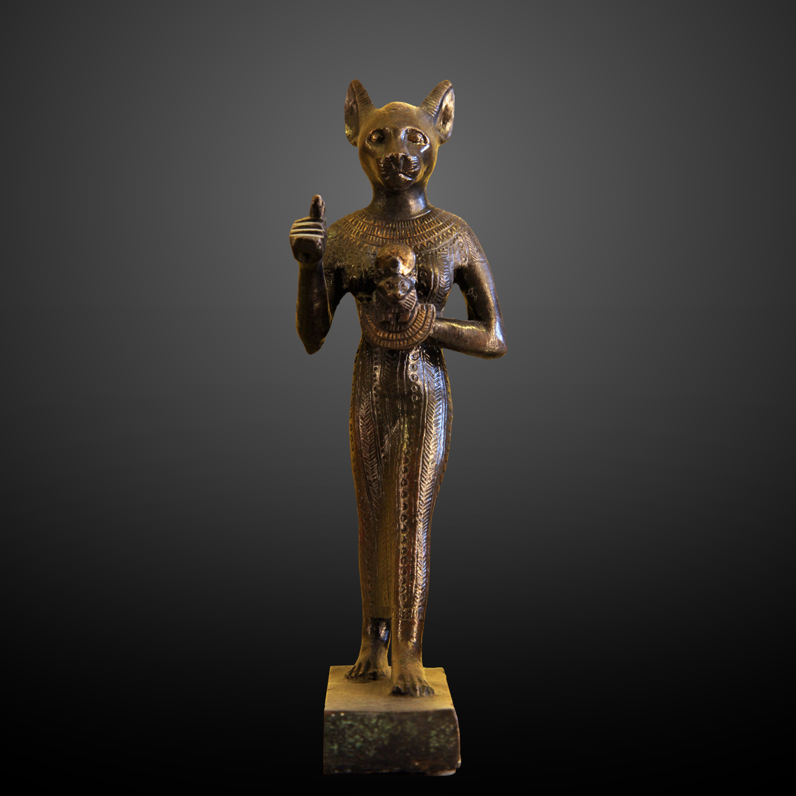
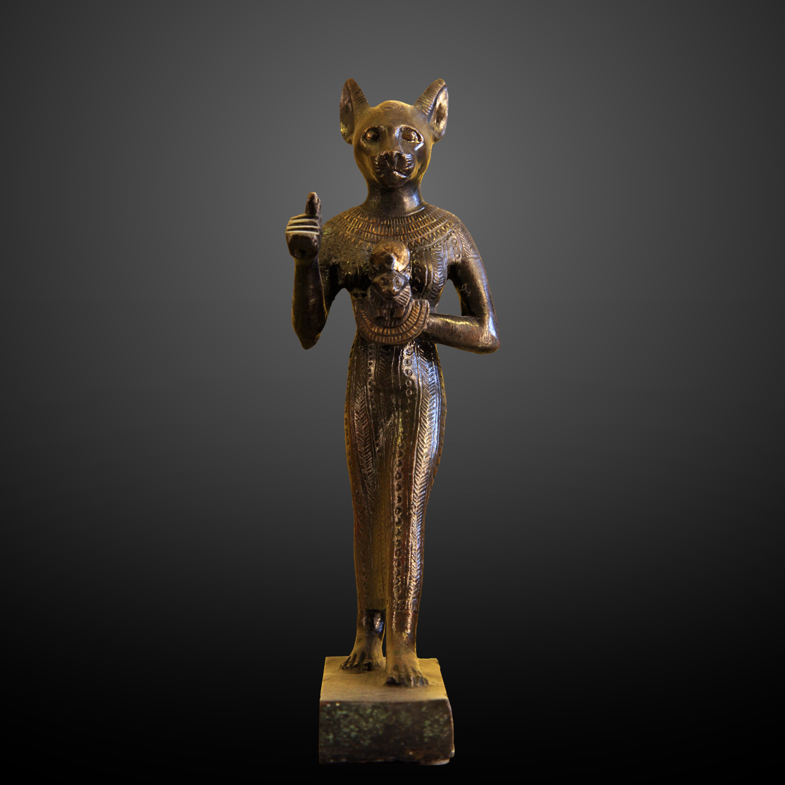

Os gatos são animais fascinantes que têm uma longa história de convivência com os seres humanos. Eles
foram
domesticados há cerca de 9.000 anos no Oriente Médio, onde eram valorizados por sua habilidade em caçar
roedores e proteger os estoques de grãos.
Desde então, os gatos se tornaram companheiros populares em
todo o mundo, com uma variedade de raças e
personalidades. Eles são conhecidos por sua independência, curiosidade e comportamento brincalhão.
Na mitologia egípcia, os gatos eram considerados animais sagrados e eram associados à deusa Bastet, que era a deusa da fertilidade, do lar e da proteção. Os egípcios acreditavam que os gatos traziam boa sorte e protegiam as casas contra maus espíritos.


 
